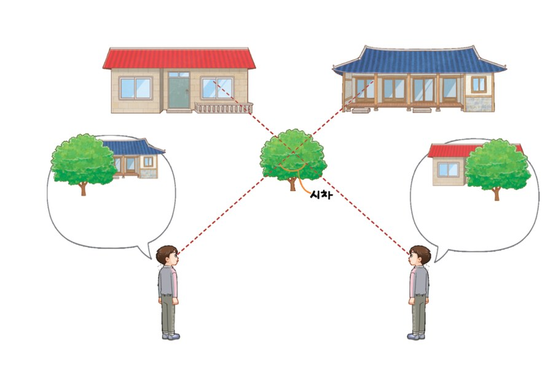

Ⅷ-1. 별 · 01 · 1~2차시
별까지의 거리
달이나 금성까지는 전파를 쏘아 되돌아오는 시간으로 거리를 잽니다. 그런데 멀리 떨어져 있는 별까지도 이 방법으로 거리를 잴 수 있을까요?
#연주 시차#광년#파섹
이 단원에서 나는
- 시차의 뜻을 설명하고, 물체까지의 거리와 시차의 관계를 말할 수 있다.
- 연주 시차를 이용하여 별까지의 거리를 구하는 방법을 설명할 수 있다.
도입 두 사람에게 화면이 다르게 보이는 까닭은?
왼쪽에 앉은 사람은 앞사람 때문에 아기 새가 가려지고,
오른쪽에 앉은 사람은 앞사람 때문에 뱀이 가려집니다.
같은 화면을 보는데 왜 서로 다르게 보일까요?
두 사람의 시선 방향이 서로 다르기 때문에, 앞사람에게 가려지는 화면의 부분도 달라집니다. 보는 위치가 달라지면 같은 물체라도 배경에 대한 위치가 달라져 보인다는 것이 이 단원의 출발점입니다.
지도 안내
실제 극장이 아니라 학교 강당처럼 관객이 같은 높이에 앉아 있는 상황이다.
비슷한 경험을 학생들이 먼저 이야기해 보게 한 뒤 시차 개념으로 넘어간다.
개념 1 시차란 무엇일까? 교과서 280쪽
떨어져 있는 두 지점 A, B에서 물체를 바라보면 A, B에서 보이는 나무의 배경이 달라집니다. 이때 두 관측 지점과 물체가 이루는 각을 시차라고 합니다.

시차 시뮬레이션 — 물체까지의 거리를 바꿔 보자
위: 위에서 본 모습 · 아래: 각 지점에서 본 모습시차 (∠A–물체–B)
—
배경에서 움직인 정도
—
관찰
—
여기까지 정리
- 시차 : 두 관측 지점과 물체가 이루는 각
- 시차는 관측 지점과 물체 사이의 거리가 가까울수록 크고, 멀수록 작다.
- 따라서 물체의 시차를 이용하여 물체까지의 거리를 비교할 수 있다.
개념 2 시차를 이용하여 별까지의 거리를 어떻게 구할까? 교과서 282쪽
태양 주위를 공전하는 지구 궤도의 양 끝에서 각각 별을 관측하면 보이는 방향이 달라져 별의 시차를 측정할 수 있습니다. 이때 시차의 ½을 그 별의 연주 시차라고 합니다.
연주 시차 시뮬레이션 — 지구가 공전하면 별은 어떻게 움직여 보일까?
위: 배경 하늘에서 보이는 위치 · 아래: 위에서 본 태양계별 S의 시차 (∠ASB)
—
별 S의 연주 시차
—
별 S까지의 거리
—
별 T의 연주 시차
—
※ 화면의 각도는 눈에 잘 보이도록 크게 과장한 모형입니다. 실제 별의 연주 시차는 1″보다도 작습니다. 1°(도) = 60′(분), 1′(분) = 60″(초)
꼭 기억할 것
- 별 S의 시차는 ∠ASB이고, 시차의 ½이 연주 시차이다.
- 이름은 ‘연주(1년)’이지만, 사진은 6개월 간격으로 찍는다.
- 더 멀리 있는 별 T의 연주 시차는 별 S보다 작다.
- 연주 시차의 단위는 ″(초)를 사용한다.
거리의 단위
- 1 pc(파섹) — 연주 시차가 1″인 별까지의 거리
- 1 광년(LY) — 빛이 1년 동안 이동하는 거리
- 1 pc은 약 3.26 광년이다.
- 멀리 있는 별의 연주 시차는 매우 작아 측정하기 어렵다. 그래서 연주 시차는 지구로부터 가까운 별의 거리를 구할 때 이용한다.
참고 자료
AU: 지구의 평균 궤도 장반경으로 1 AU = 1.496×108 km. 해왕성은 약 30 AU.
광년: 1 광년 = 9.46×1012 km = 6.324×104 AU.
파섹: 1 pc = 3.086×1013 km = 206265 AU = 3.26 LY.
광년: 1 광년 = 9.46×1012 km = 6.324×104 AU.
파섹: 1 pc = 3.086×1013 km = 206265 AU = 3.26 LY.
| 표 1 | 별의 연주 시차와 거리
| 별 | 연주 시차 (″) | 거리 (pc) | 한눈에 보기 |
|---|---|---|---|
| 프록시마 센타우리 | 0.77 | 1.3 | |
| 시리우스 | 0.38 | 2.6 | |
| 베가 | 0.13 | 7.7 | |
| 아르크투루스 | 0.09 | 11.2 |
출처: Strasbourg Astronomical Data Center, 2024 · 막대가 길수록 먼 별입니다. 연주 시차가 큰 별일수록 지구로부터 가깝습니다.
지도상의 유의점
연주 시차는 명칭은 1년 주기이지만 측정 사진은 6개월 간격임을 이해하게 하고, 연주 시차가 시차의 절반임을 명확히 구분하도록 지도한다.
별까지의 거리를 구하는 수식은 도입하지 않는다.
정리 핵심 정리
- 시차 : 고정된 먼 배경이 있을 때, 한 물체를 서로 다른 위치의 두 관측자가 관측하면 생기는 겉보기 위치 차이에 해당하는 각
- 거리에 따른 시차 : 관측 지점과 물체 사이의 거리가 가까울수록 시차가 크고, 멀수록 작다.
- 연주 시차 : 태양 주위를 공전하는 지구의 공전 궤도 양 끝에서 별을 관측할 때 나타나는 시차의 절반
- 파섹(parsec, pc) : 연주 시차가 1″인 별까지의 거리. 1 pc ≒ 3.26 광년
- 지구에서 멀리 있는 별일수록 연주 시차는 작아진다.
확인 이것만은 & 스스로 정리하기
1별이 지구로부터 멀리 떨어져 있을수록 연주 시차는?
작아진다. 거리가 멀수록 지구 공전에 따른 겉보기 위치 변화가 작아지므로 연주 시차도 작아집니다.
2연주 시차가 1″인 별은 지구로부터 1 떨어져 있는 별이다.
pc(파섹) — 연주 시차가 1″인 별까지의 거리를 1 pc이라고 하며, 1 pc은 약 3.26 광년입니다.
3별의 연주 시차를 구하려면 별을 몇 개월 간격으로 관측해야 하는가?
6개월 간격 — 지구 공전 궤도의 양 끝에서 관측해야 하므로 6개월 간격입니다. 이때 측정한 시차의 절반이 연주 시차입니다.
스스로 정리하기
별의 ㅇ ㅈ ㅅ ㅊ를 측정하면 별까지의 거리를 구할 수 있다.
연주 시차